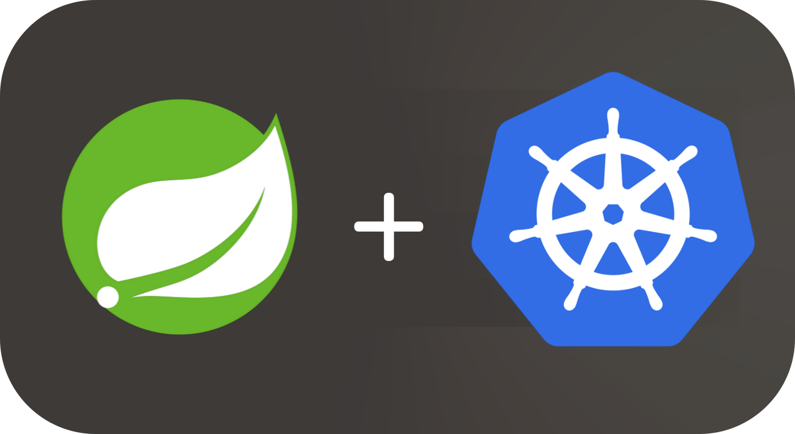
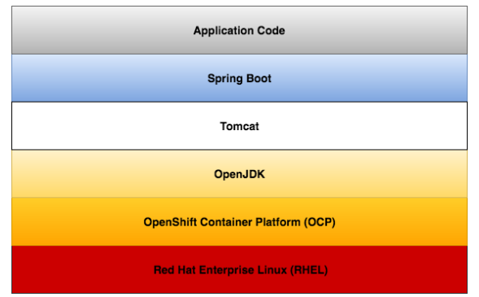
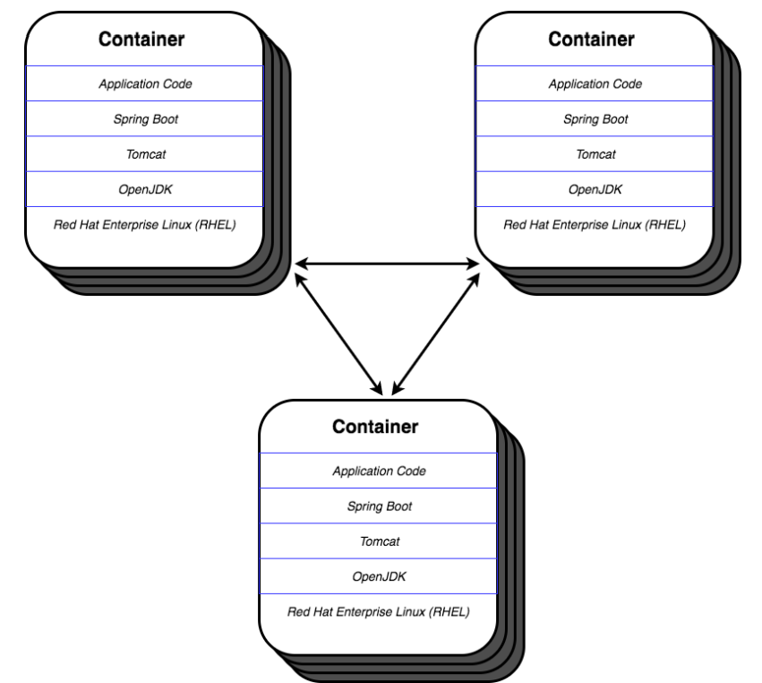
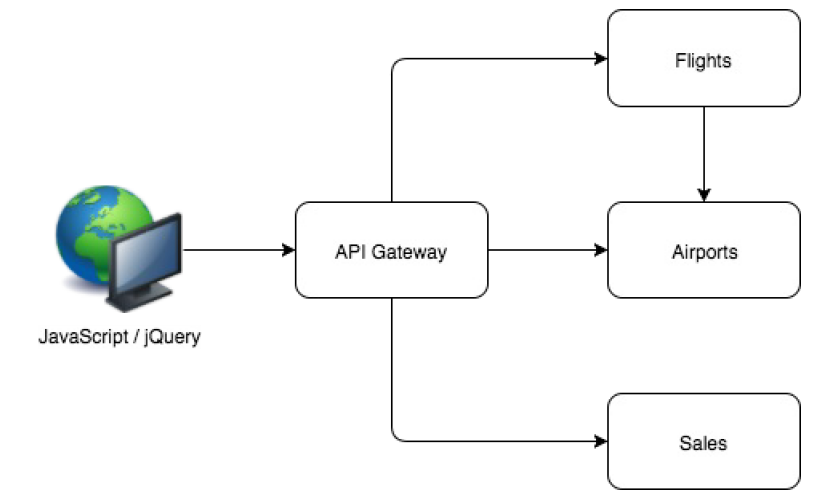
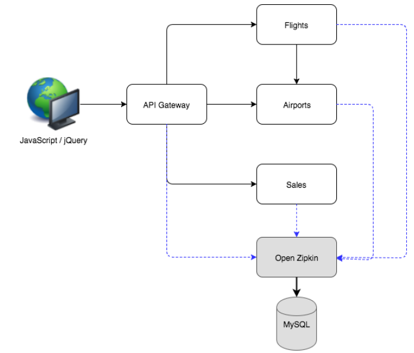
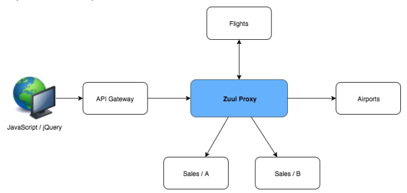
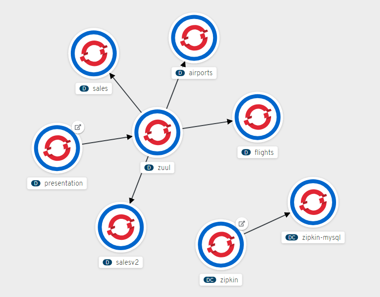

Spring Boot 微服务上容器平台的最佳实践 - 2
在 2019-11-15 Friday 发布于 Java 分类 • 1 min read

前言¶
今天开始第二篇, 主要介绍下 Demo 应用的架构.
另外, 我要吃掉我之前写的第一篇了, 纠正如下:
第一篇修订:
这一次，相关的场景是这样的：
Spring Cloud 微服务系统已经提前搞好了，并没有运行在容器平台上，而是直接运行在虚机上。这次就是结合Spring Boot的组件和K8S (OpenShift)的相关概念和优势，将其迁移部署到容器平台上。
Demo 架构¶
这个Demo 架构演示了在微服务体系结构风格中构建的机票搜索系统。每个单独的微服务都是作为REST服务实现的，它位于Spring Boot之上，带有一个嵌入式Tomcat服务器，部署在OpenShift镜像上，并支持OpenJDK。典型微服务的软件栈如下:

每个微服务实例在一个容器实例中运行，每个OpenShift pod有一个容器，每个Service 有一个容器。在其核心，用微服务体系结构风格构建的应用程序由许多相互调用的复制容器组成.

应用程序的核心功能是由微服务提供的，每个微服务承担一个单一的职责。有一个服务充当API网关，调用单个微服务并聚合响应，以便更容易地使用它。

该架构还实现并扩展了Spring Sleuth和OpenZipkin的分布式跟踪(distributed tracing)功能。OpenZipkin作为一个单独的服务运行，使用一个MySQL数据库来持久化它的数据，应用程序中的每个服务都会调用Zipkin。

最后，Demo 应用使用Zuul作为边缘服务来提供静态和动态路由。结果是，所有服务调用实际上都被定向到Zuul，并由它适当地代理请求。这个Demo也会演示A/B测试 , 通过提供销售服务的另一个版本并在运行时决定将其用于哪一类客户。

小结¶
应用架构:
用户通过前端程序(presentation的页面进行访问, 访问的请求会调用API Gateway, 通过Zuul 作为代理路由到各个微服务: Flights, Airports, Sales. 同时请求的tracing信息会发送给zipkin.

用到的组件:
结合上一篇文章来看, 具体如下:
| Spring Boot 全家桶 | Spring Boot 全家桶 | K8S (OpenShift) |
|---|---|---|
| 客户端库 | Ribbon | 无 |
| 服务注册 | Service | |
| 负载均衡 | Ribbon | Service |
| 断路器 | Hystrix | |
| 外部化配置 | ConfigMap | |
| 分布式 Tracing | Sleuth/Zipkin | |
| 代理/路由 | Zuul |